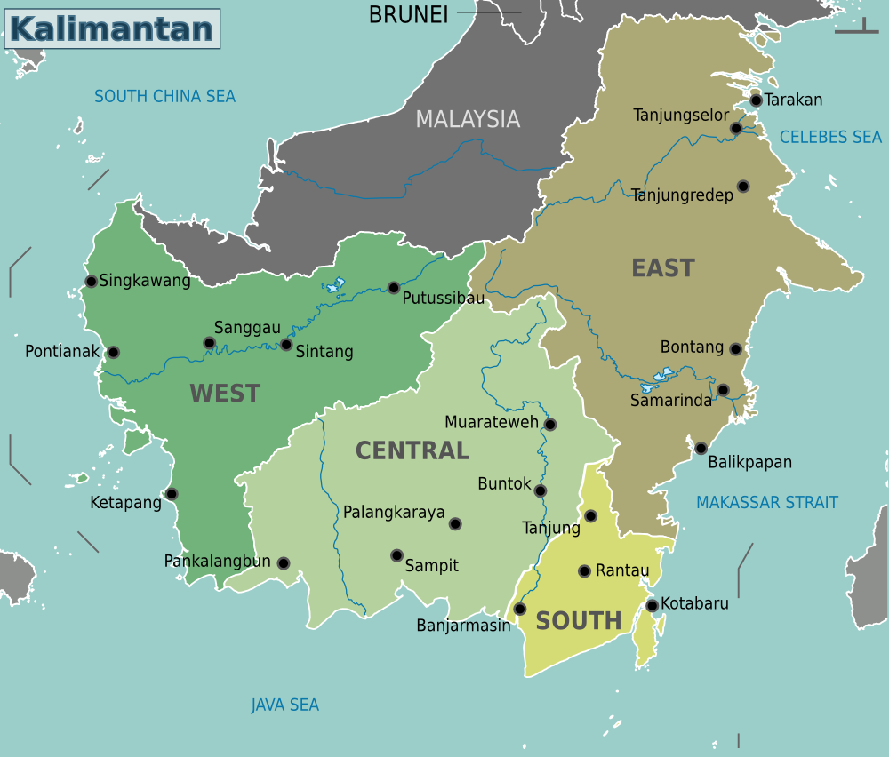

Pulau Kalimantan
Kalimantan adalah wilayah pulau terbesar ketiga di dunia dan bagian dari wilayah Indonesia yang dikenal karena kekayaan alam dan keanekaragaman hayatinya. Pulau ini memiliki hutan hujan tropis yang luas dan merupakan rumah bagi berbagai spesies langka seperti orangutan, bekantan, macan dahan Borneo, serta banyak flora dan fauna endemik lainnya.
Kalimantan juga memiliki berbagai flora yang unik, yang mana merupakan salah satu pulau dengan keanekaragaman hayati tertinggi di dunia. Hutan Kalimantan menyimpan berbagai jenis pohon, seperti meranti, ulin, dan jelutung, serta tanaman obat yang digunakan oleh masyarakat lokal. Hutan ini juga berperan penting dalam penyerapan karbon dioksida dan pengaturan iklim global.
Kalimantan dibagi menjadi beberapa provinsi di Indonesia: Kalimantan Barat, Kalimantan Tengah, Kalimantan Selatan, Kalimantan Timur, dan Kalimantan Utara. Pulau ini juga memiliki bagian yang termasuk dalam negara Malaysia (Sabah dan Sarawak) serta Brunei Darussalam.
Selain kekayaan alam, Kalimantan juga dikenal akan budaya lokalnya yang kaya, termasuk berbagai suku Dayak yang memiliki tradisi, seni, dan bahasa yang unik. Kegiatan budaya seperti Festival Dahau di Kutai Barat merupakan wujud pelestarian warisan leluhur.
Dengan potensi luar biasa ini, Kalimantan menjadi fokus penting dalam upaya pelestarian alam, pendidikan lingkungan, dan pengembangan berkelanjutan di Indonesia dan dunia.